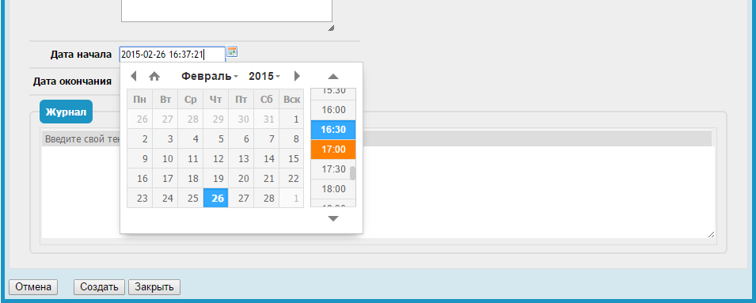

Удобный виджет выбора даты и времени для Combodo iTop 2.1
Этот модуль заменяет стандартный виджет выбора даты и времени на вот этот:

Установка
Устанавливаем, как и любой другой модуль в iTop:
- Перекладываем папку datatimepicker-widget в itop/extensions/.
- Разрешаем редактирование config-файла iTop itop/conf/production/config-itop.php.
- Переходим в браузере http://my-itop/setup и выбираем "Upgrade an existing iTop instance".
- На предпоследнем шаге ставим галочку напротив названия модуля и устанавливаем.
- Готово.
Настройка
После установки модуля в config-файле добавятся параметры виджета, доступные для редактирования.
'datetimepicker-widget' => array (
'default' => array(
'lang' => 'ru',
'dayOfWeekStart' => 1,
'step' => 30
)
),
Возможные значения параметров смотри в документации к плагину.
Ограничения
- Формат может быть только такой:
Y-m-d H:i.
Дальнейшие планы
- Добавить поддержку различных настроек для разных полей.
Ссылки